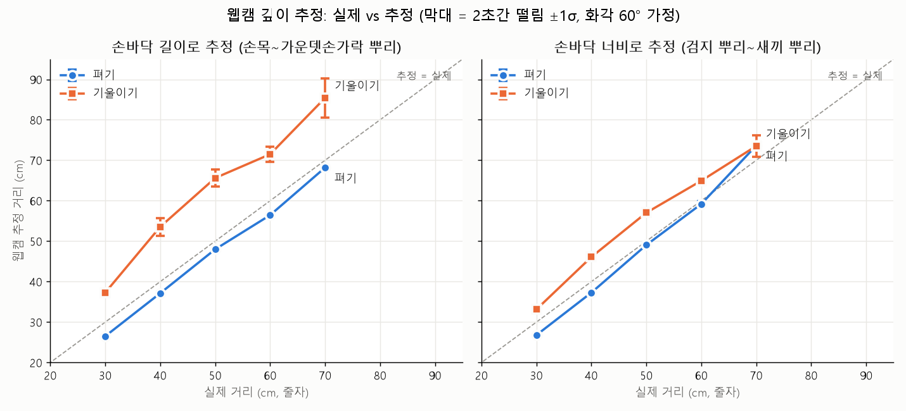
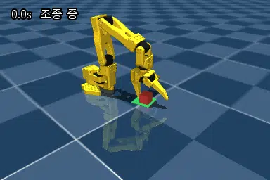
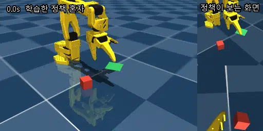
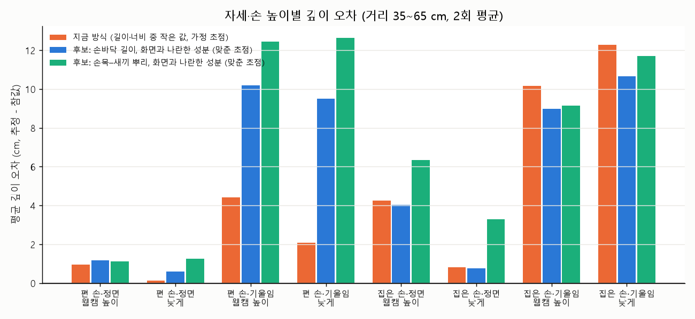
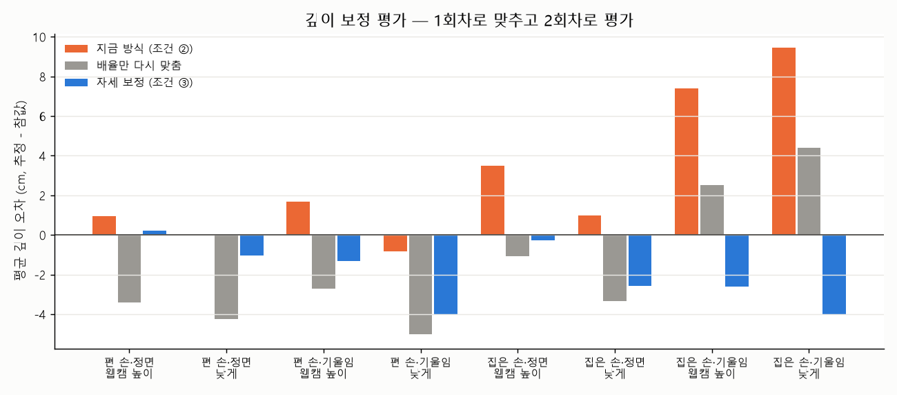

보통 SO-100/101 로봇팔은 조종용 팔을 하나 더 두고 시범을 보여 가르친다. 이 프로젝트는 웹캠 하나로 시범을 모으고, 그 시범으로 모방 학습을 했을 때 웹캠의 깊이 오차가 성공률을 얼마나 깎아 먹는지를 재는 것이 목표다. 프로그램 시범으로 학습시킨 로봇이 처음 보는 배치 100개 중 88개를 혼자 해내는 기준점을 잡았고, 참값과 비교한 깊이 측정으로 깊이 보정(조건 ③)을 만든 뒤, 웹캠 시범을 보정 전·후 50개씩 직접 녹화했다(마일스톤 11개 중 8개, 조건 ④ 남음). 코드는 Claude Code와 함께 작성했고, 이 문서에는 무엇을 재고 무엇이 틀렸고 어떻게 고쳤는지를 남겼다.
모든 수치는 직접 잰 값이다. 한 사람이 한 번 잰 예비 측정은 예비 측정이라고 적었다.
구성: Python 3.12(uv), MuJoCo 3.14 + MuJoCo Menagerie SO-101 모델, MediaPipe Hand Landmarker 1.0.1(노트북 CPU), LeRobot 0.6.1(데이터셋·ACT). NVIDIA GPU 없는 노트북에서 조종·데이터·평가, 학습만 RunPod 대여 GPU.
코드를 쓰기 전에 비슷한 게 이미 있는지부터 찾았다. 이미 있었다. 그래서 "무엇을 더 할 수 있나"로 질문을 바꿨다.
2026-10-01에 GitHub와 논문을 찾은 결과다(찾은 범위에서이며, 없다는 보장은 아니다).
| 이름 | 한 것 | 이 프로젝트와의 관계 |
|---|---|---|
| handrobot | 웹캠 손 → MuJoCo 로봇팔(Panda·SO-101) 조종 → 시범 녹화 → ACT 학습 → 평가. README 기준 단일 과제 95% | 파이프라인이 거의 같다. 보고된 성공률은 재현성을 위해 프로그램이 만든 시범 150개로 학습한 기준선이고, 웹캠 사람 시범으로 학습한 결과는 적혀 있지 않다. 스스로 "단안 깊이가 약한 고리"라고 적었다 |
| mediapipe-so101 | 웹캠 손목 포즈로 실물 SO-101 조종, LeRobot 데이터셋, ACT 등 학습 시도 | 실물 쪽. 조건을 나눈 비교는 없다 |
| hand-teleop | 웹캠 → 관절 각도 (LeRobot용) | 조종 도구. 학습은 다루지 않는다 |
| Li, Cui, Sadigh (ICRA 2025) | 시범 방식(손으로 직접 움직이기·VR·3D 마우스)에 따른 모방 학습 결과 비교 | 웹캠 손 추적은 비교 대상에 없다 — 이 프로젝트가 채울 칸 |
| Belkhale et al. (NeurIPS 2023) | 같은 상황에서 시범 행동이 들쭉날쭉하면 학습 성능이 떨어진다는 데이터 품질 정식화 | 웹캠 오차가 "행동의 들쭉날쭉함"을 늘리는지 재 볼 수 있다 |
| robomimic (CoRL 2021) | 숙련도가 다른 조작자 6명의 시범으로 학습 비교 | 사람 숙련도는 다뤘지만 입력 장치 오차는 다루지 않았다 |
2026-10-03에 비전 학회와 인용 따라가기(487편)로 다시 찾은 결과는 10장. 차별점은 그대로였다.
"단안 웹캠 시범은 모방 학습 성공률을 얼마나 깎아 먹고, 그중 깊이 오차의 몫은 얼마이며, 보정하면 얼마나 회복되는가?"
| 조건 | 시범 데이터 | 알 수 있는 것 |
|---|---|---|
| ① | 프로그램이 만든 시범 | 나올 수 있는 최대 성공률 |
| ② | 웹캠으로 보여 준 시범 | 웹캠이 실제로 얼마나 손해인지 |
| ③ | ② + 깊이 보정 | 보정으로 얼마나 회복되는지 |
| ④ | ① + 2장에서 실측한 웹캠 깊이 오차 패턴을 주입 | ①→④는 깊이 오차 때문, ④→②는 나머지(사람의 서툶·지연) 때문으로 나눠 볼 수 있다 |
②의 성공률이 떨어져도, 원인이 깊이 오차인지 사람이 서툴러서인지 ②만으로는 가를 수 없다. ④는 사람 없이 깊이 오차만 넣은 데이터라서, 요인을 하나씩 떼어 보는 실험(ablation)이 된다. 결과가 "웹캠도 충분하다"로 나와도, "손해가 크다"로 나와도 의미가 있도록 짰다.
MediaPipe는 카메라에서 손까지 거리를 직접 알려 주지 않는다. 그래서 추정 방법을 정하고, 얼마나 틀리는지부터 쟀다.
MediaPipe 손 모델은 두 가지 좌표를 준다. 화면 좌표는 사진 위 위치이고 z는 손목 기준 상대값일 뿐이다. 월드 좌표는 미터 단위지만 원점이 손 한가운데라서, 손 모양은 알려 줘도 카메라까지 거리는 모른다. 그래서 "멀리 있으면 작게 보인다"는 핀홀 관계로 거리를 추정했다.
거리 = 초점거리(px) × 실제 손바닥 길이(m, 월드 좌표) / 사진 속 손바닥 길이(px, 화면 좌표)초점거리는 노트북 웹캠 가로 화각을 60°로 가정한 554 px다(보정 전).
줄자를 웹캠 앞 책상에 펴고, 30·40·50·60·70 cm에 손을 두고 2초씩(60프레임) 가만히 있었다. 자세는 손바닥을 카메라로 편 것과 물건을 잡으러 갈 때처럼 약 45° 기울인 것 두 가지. 화면 안내에 따라 스페이스만 누르면 숫자만 CSV로 저장되게 했고, 추정 거리는 일부러 화면에 안 보이게 했다(보이면 무의식적으로 손을 맞추게 된다). 내 손바닥 실측 길이는 10.0 cm.

| 추정에 쓴 구간 | 자세 | 평균 오차 | 범위 | 평균 흔들림 σ |
|---|---|---|---|---|
| 손바닥 길이 (손목~가운뎃손가락 뿌리) | 펴기 | −2.7 cm | −3.6 ~ −1.8 | 0.30 cm |
| 손바닥 길이 | 기울이기 | +12.7 cm | +7.3 ~ +15.6 | 2.30 cm |
| 손바닥 너비 (검지 뿌리~새끼 뿌리) | 펴기 | −0.8 cm | −3.2 ~ +3.6 | 0.48 cm |
| 손바닥 너비 | 기울이기 | +4.9 cm | +3.1 ~ +7.0 | 1.03 cm |
손 추적 시간 중앙값 11.2 ms(95% 14.1 ms), 약 30 fps.
손바닥을 기울이면 사진 속 손바닥이 짧아 보인다. 월드 좌표가 기울어진 손을 3D로 제대로 복원했다면 실제 길이는 10 cm 그대로라 짧아진 만큼을 보상했을 것이다. 그런데 MediaPipe 월드 좌표의 손바닥 길이는 펴면 9.7~10.1 cm로 거의 정확하다가, 기울이면 6.5~7.0 cm로 줄었다. 카메라 방향(깊이) 성분을 덜 잡아서 보상이 모자란 것이다. 이전 웹캠 낚시 게임에서 "팔을 앞으로 뻗어도 z 변화가 위아래의 약 0.4배로 눌린다"를 봤는데, 같은 현상이 손 모델 안에서도 일어나는 것을 숫자로 확인했다.
손바닥을 앞뒤로 기울이면 사진 속 길이는 짧아지지만 너비는 거의 그대로다. 그래서 너비로 추정하면 기울였을 때 오차가 +12.7 → +4.9 cm로 줄었다. 대신 손을 옆으로 돌리면 너비가 짧아진다 — 실제 조종 기록에서 너비 기준 깊이가 1 m를 넘는 프레임이 2.4% 있었다(4장).
한 사람, 한 번, 한 손, 거리 5개 × 자세 2개. 기울기 각도는 눈대중이고, 옆으로 돌리기·화면 가장자리·움직이는 손은 안 쟀다. 줄자 기준과 손 위치를 눈으로 맞춰 ±1~2 cm 오차가 있을 수 있다. 경향까지만 말할 수 있고, 정식 측정은 이후에 다시 한다.
"집게 끝을 여기에" → 관절 각도. 라이브러리 대신 직접 구현했다. 관절이 5개라서 위치와 방향을 다 맞출 수 없다는 게 핵심 문제였다.
모든 관절 0°에서 하나씩 +20° 돌렸을 때 집게 끝 이동량(cm)이다. 역기구학에 쓰는 야코비안은 이 표를 아주 작은 각도로 만든 것이다.
| 관절 | 앞뒤 x | 좌우 y | 위아래 z | 역할 |
|---|---|---|---|---|
| shoulder_pan | −2.2 | −12.1 | 0 | 몸통 돌리기 |
| shoulder_lift | +2.5 | 0 | −11.8 | 같은 세로 평면에서 앞뒤·위아래. 관절에서 끝까지 멀수록 많이 움직인다 |
| elbow_flex | −1.2 | 0 | −10.2 | |
| wrist_flex | −0.6 | 0 | −5.5 | |
| wrist_roll | 0 | +0.4 | 0 | 집게 방향만 돌림 |
물건을 위에서 집으려면 집게가 아래를 향해야 한다. 위치 3개 + 방향을 관절 4개(wrist_roll 제외)로 맞추려니 누가 양보할지를 정해야 했다.
| 시도 | 방법 | 위치 최대 오차 | 무엇이 문제였나 |
|---|---|---|---|
| 0 | 위치만 (방향 무시) | 72.5 mm | 도달 가능한 92%는 2 mm 이내. 나머지 8%는 원래 팔이 안 닿는 곳 |
| 1 | 위치 + 방향을 가중치로 섞기 | 87 mm | 둘이 서로 양보해서 둘 다 어중간 |
| 2 | 위치 1순위, 방향 2순위 (영공간) | 124 mm | 더 나빠짐. 계산 안정용 감쇠가 들어간 역행렬로 영공간을 만들어서, 방향 보정이 위치로 새어 들어감 |
| 3 | 2 + 정확한 역행렬로 영공간 + 한계 각도에 닿은 관절 빼기 | 72.5 mm | 도달 가능한 92% 전부 2 mm 이내(중앙값 0.14 mm). 높이 3 cm에서 방향 오차 최대 2.6°. 풀이 약 6.6 ms |
"집게 끝 위치를 안 바꾸는 관절 움직임"이다. 컵을 든 손은 그대로 두고 팔꿈치만 들었다 내렸다 하는 것과 같다. 관절 4개로 위치 3개를 맞추면 이런 여유가 하나 남고, 그 여유만 써서 집게 방향을 맞추면 위치는 건드리지 않는다. 시도 2가 실패한 건 이 "안 건드림"이 감쇠 때문에 정확하지 않았기 때문이다.
직접 조종해 보고 느낀 불편을 말로 전달하면, 프레임마다 저장한 숫자 기록(영상 없음)으로 원인을 확인하고 고쳤다.
웹캠 → MediaPipe 손 → 손바닥 중심 + 핀홀 깊이 → 카메라 좌표 3D
→ 깊이 튐 무시 · 평활 → 클러치 기준점과의 차이 × 배율 → 로봇 목표 (작업 범위 안으로)
→ 우선순위 역기구학 → MuJoCo SO-101
엄지-검지 거리 / 손바닥 너비 → 집게 (딸깍 스위치)스페이스로 조종을 걸고 풀 수 있다(클러치). 마우스가 패드 끝에 닿으면 들어서 옮기는 것처럼, 손이 불편한 위치에 가면 풀고 옮긴 뒤 다시 건다.
| 시험 | 느낀 것 | 기록에서 확인한 원인 | 고친 것 |
|---|---|---|---|
| 1 | 좌우가 반대 | 로봇 창 시점을 로봇 앞(거울)으로 잘못 설정. 조종 방향은 맞았다 | 로봇 뒤에서 보는 시점 |
| 1 | 위아래가 잘 안 됨 | 목표가 앞쪽 한계(35 cm)에 막힌 프레임 36%, 역기구학 오차 10 mm 넘는 프레임 46% — 팔이 다 펴져 위아래 여유가 없음 | 도달 범위를 역기구학으로 훑어 작업 범위 축소 |
| 1 | (기록에서만 발견) | 너비 기준 깊이가 손을 옆으로 돌리면 1 m 넘게 튐(2.4% 프레임) | 길이·너비 중 작은 값 사용(같은 기록에서 0%) |
| 2 | 집게가 부자연스러움 | 손가락을 붙여도 비율이 0.4~0.9까지만 내려감(닫힘 기준 0.35). 완전히 닫힌 시간 1% | 비례 → 딸깍 스위치(0.8 아래 닫힘, 1.0 위 열림). 재생 시 닫힘 21% |
| 2 | 가끔 몸 쪽으로 붙음 | 조종을 거는 순간 깊이가 12.7·21.8 cm로 튄 구간에서 몸 쪽 한계에 25·58% 머묾 | 한 프레임 10 cm 넘는 깊이 변화 무시, 기준점은 직전 10프레임 중앙값 |
| 3 | 집게 괜찮음, 붙는 것 줄어듦 | 기준점 튐은 사라짐. 그래도 몸 쪽 한계에 45%, 처음 자세가 몸 쪽 여유 5 cm뿐 | 처음 자세를 작업 범위 가운데로 |
시험 2에서 깊이 중앙값이 편 손 46.3 cm, 집은 손 55.3 cm였다. 손가락을 오므리며 손이 기울어 2장의 "기울이면 멀다"가 나타난 것으로 보인다 (실제로 손을 뺐을 가능성도 있어 확실하지 않다). 이건 조건 ③ 깊이 보정이 풀 문제라 기본 조종에서 고치지 않았다. 기본 처리에서 몰래 고치면 ②와 ③의 차이가 사라진다.
모든 웹캠 조건에 공통인 "상식적인 기본 처리"(깊이 튐 무시, 평활, 기준점 중앙값, 길이·너비 중 작은 값, 집게 스위치)는 한 파일
(teleop_mapping.py)에만 두고, 자세에 따른 깊이 치우침 보정은 조건 ③에서만 하도록 코드부터 나눴다.
같은 이유로 손목 돌리기는 연결하지 않고, 과제를 물체가 항상 같은 방향으로 놓이게 짜기로 했다 — 깊이 말고 다른 오차 원인을 줄이기 위해서다.
시험 3에서도 몸 쪽 한계에 붙은 시간이 45%였고, 그때 손 깊이는 시작보다 약 10 cm 멀었다. 실제로 손을 당긴 건지 깊이가 멀게 추정된 건지는 참값이 없어서 기록만으로는 가를 수 없다. 정식 측정에서 확인한다.
기록된 관절 각도만으로 로봇 움직임을 다시 그려 보니(웹캠 영상은 쓰지 않음), 조종 창에선 안 보이던 자세가 있었다. 다시 계산한 집게 끝 위치가 기록과 일치해서 실제로 그 자세였다는 것도 확인했다. 목표가 몸 가까이·높은 곳(앞 14~16, 높이 10~12 cm)일 때 어깨가 한계(약 −100°)까지 젖혀지고 집게가 43° 기울었고, 한 장면은 어깨 모터가 명령을 못 따라가 목표보다 4 cm 낮았다. 작업 범위를 y=0 단면만 보고 정한 게 원인이라, 3D 격자 245점으로 다시 확인해 앞 16~28, 좌우 ±15, 높이 1~8 cm로 줄였다 (99%가 위치 2 mm·방향 10° 이내, 최대 1.0 mm·10.9°).
3 cm 큐브를 집어 6 × 6 cm 초록 목표 위에 내려놓는 과제. 큐브는 로봇 오른쪽, 목표는 왼쪽 영역에서 무작위로 놓이고, 손목 돌리기를 고정했기 때문에 큐브는 항상 면이 로봇을 향하게 놓는다.
정답 위치를 아는 프로그램이 "큐브 위 → 내려가기 → 닫기 → 들기 → 목표 위 → 내려놓기 → 열기"를 30 Hz로 따라가게 했다(조건 ①). 처음엔 20개 중 14개만 성공했다. 실패를 접촉 힘까지 추적해 보니 내려갈 때 고정 턱이 큐브 모서리 위에 올라타 집게 끝이 3.4 cm에서 멈추고 바닥이 28 N으로 받치고 있었다. 집는 기준점을 큐브 중심보다 0.7 cm 바깥에 둔 게 너무 빠듯했다. 기준점을 큐브 중심으로 옮기자 새 배치 100개가 전부 성공했다(목표 중심에서 최대 0.6 cm).
스크립트로 일부러 비켜 잡게 해 보니, 옆으로는 ±1 cm까지 잡고 옮겼지만 바깥쪽(앞)으로는 1 cm만 비켜도 못 잡았다. 로봇의 앞뒤는 웹캠의 깊이 방향이다. 예비 측정의 깊이 오차(펴도 −2.7 cm, 기울이면 +12.7 cm)에 비해 허용 오차가 훨씬 작다 — "깊이 오차가 성공률을 깎을 것"이라는 가설의 구체적인 근거.
데이터셋을 만들다가, 조종한 사람이 "성공 못 했다"고 한 시도에도 성공이 찍혀 있는 걸 발견했다. 성공 직전 1초 동안 큐브 최고 높이가 1.5~1.9 cm(바닥에 놓인 높이 1.5 cm)였다 — 들어 옮긴 게 아니라 바닥에서 밀어 넣은 것도 성공으로 치고 있었다. 그중 하나를 "첫 웹캠 성공"으로 잘못 정리했다가 바로잡은 과정도 저장소 기록에 그대로 남겼다.
| 판정 | 조건 | 10-02 조종 기록 8개 |
|---|---|---|
| 처음 | 큐브가 목표 사각형 안 + 바닥 + 집게 열림 | 4개 "성공" — 전부 밀어 넣기 |
| 바꾼 뒤 | ① 바닥에서 1 cm 넘게 들렸다가 ② 목표 안에 내려앉고 ③ 그 뒤 1 cm 넘게 밀리지 않고 ④ 집게가 열린 채 0.5초 | 8개 모두 실패 — 조종한 사람의 판단과 일치 |
스크립트 시범, 조종 화면, 데이터셋 만들기, 학습한 로봇 평가가 모두 이 판정 하나를 쓴다. 대회에서 "내부 지표와 실제 성능이 뒤집힐 수 있다"는 걸 겪었는데, 이번엔 지표를 쓰기 전에 사람 눈과 맞는지부터 확인했다.
큐브 과제를 웹캠으로 직접 해 보며 나온 소감을 조종 기록(숫자, 영상 없음)으로 확인하고 고쳤다.
| 느낀 것 | 기록에서 확인한 원인 | 고친 것 |
|---|---|---|
| 위아래로 내리는 게 인식이 잘 안 된다 | 높이 상한에 막힌 프레임 27%. 손을 더 올린 만큼을 기억해서, 내려도 그만큼 돌아올 때까지 안 움직였다 | 작업 범위를 넘친 만큼은 버림 |
| (목표 위라고 생각했는데) | 실제로는 앞으로 약 6 cm 벗어남 — 뒤에서 보는 3D 창으로는 앞뒤·높이 판단이 어려움 | 위·옆에서 본 2D 안내 그림과 "앞/뒤·좌/우·위/아래 몇 cm" 표시. 3D 작은 창은 한 프레임 110 ms라 포기, 2D는 0.18 ms |
| 손이 웹캠 화면 밖으로 금방 나간다 | 큐브→목표 최대 24 cm를 배율 0.7로 옮기려면 손을 34 cm 움직여야 함 | 좌우·위아래 배율 1.0 |
| 여전히 내리는 게 편하지 않다 | 손을 내리면 카메라가 비스듬히 내려다봐서 깊이가 멀게 나옴(세로 이동과 깊이 변화가 거의 같은 크기) | 일부러 안 고침 — 웹캠의 깊이 오차 그 자체라 조건 ③에서 다룬다 |
| 목표 쪽에서 놓으려고 하면 불안정하다 | 아래 6.0 | 집기 잠금 |
가장 아까운 시도는 큐브를 목표 바로 위·바닥 높이까지 가져간 뒤, 놓으려고 손가락을 벌리는 순간 손 깊이가 59 → 67 → 55 cm로 튀어 로봇이 3 cm 물러나며 큐브를 끌고 나간 경우였다. 그날 기록의 집게 여닫기 323번을 모아 봤다.
| 1.2초 동안 깊이 출렁임 | 로봇 앞뒤 출렁임 | |
|---|---|---|
| 닫을 때 (163번) | 14.3 cm | 2.0 cm |
| 열 때 (160번) | 14.4 cm | 2.6 cm |
| 집게를 안 건드린 구간 | 5.1 cm | — |
로봇이 흔들리는 폭(2~2.6 cm)이 집기 허용 오차(앞뒤 0.5~1 cm)보다 크다. 손가락이 붙거나 벌어지는 동안과 그 뒤 0.4초는 팔을 고정하고, 풀리는 순간 클러치처럼 기준을 다시 잡는 집기 잠금을 모든 웹캠 조건 공통 처리로 넣었다. 그 뒤 첫 시도에서 성공했다.

집기 잠금이 풀릴 때 기준을 다시 잡는 것은 손 모양(집은 손 vs 편 손)에 따른 깊이 차이도 일부 없앤다 → 조건 ②와 ③의 차이가 그만큼 줄 수 있다. 사람 시범은 스크립트처럼 한 번에 놓지 않고 들었다 놓기를 반복하며 고친다(이 시범 74초, 스크립트 약 6초) — 이것도 웹캠 시범의 특징이다.
웹캠 비교에 들어가기 전에, 조건 ①(스크립트 시범)로 데이터 → GPU 학습 → 평가가 끝까지 도는지 확인하고 기준점을 잡았다.

| 항목 | 값 |
|---|---|
| 학습 | LeRobot ACT 기본값(chunk 100 ≈ 3.3초, lr 1e-5 고정), 2만 스텝·배치 8. RunPod RTX 3090 982초, 약 22 step/s, GPU 메모리 0.97 GB, 약 $0.07 |
| loss | 6.30(200스텝) → 0.065(2만 스텝) |
| 성공률 | 88/100, 윌슨 95% 구간 80~93%. 들어 올리기까지 94%. 성공 평균 4.6초 |
| 실패 12개 | 집기 실패 6(큐브가 로봇 가까이·먼 구석) / 옮기다 떨어뜨림 3 / 목표 안에 놓았지만 놓는 순간 1.1~1.3 cm 밀림 3 |
마지막 3개는 "밀림 1 cm" 규칙만 아니면 성공이었다(느슨하게 치면 91%). 그래도 결과를 본 뒤 판정을 바꾸지 않고 고정했다 — 같은 판정을 모든 조건에 쓰면 비교는 공정하다. 이 88%가 앞으로 웹캠 시범으로 학습한 로봇을 견줄 기준점이다.
진행 과정을 비공개 SNS 계정에 올리고, 도움이 될 것 같은 같은 학과 동기·친구들에게만 공유해 피드백을 받는다.
같은 전공 동기의 질문은 분석으로 이어졌다. 받은 질문과 그 결과는 저장소의 docs/04-feedback-log.md에 남긴다.
반은 맞았다. 사진 속 손바닥은 기울이면 짧아진다(30 cm에서 204 → 97 px). 그런데 식에 쓰는 MediaPipe 3D 손바닥 길이도 같이 줄었고(9.8 → 6.5~7.0 cm), 더 따져 보면 3D 복원이 완벽했어도 식 자체가 기울기를 고려하지 않아 오히려 더 멀다고 착각했어야 한다. 사진 속 길이와 짝이 맞는 건 3D 구간의 화면과 나란한 성분이다. 같은 측정 데이터로 다시 계산했다.
| 구간 · 방식 | 펴기 평균 오차 | 기울이기 평균 오차 | 기울이기 흔들림 σ |
|---|---|---|---|
| 길이, 3D 전체 (기존) | −2.7 | +12.7 | 2.30 |
| 길이, 화면과 나란한 성분 | −2.9 | +6.0 | 0.67 |
| 너비, 3D 전체 | −0.8 | +4.9 | 1.03 |
| 너비, 화면과 나란한 성분 | −4.2 | +0.0 | 0.83 |
손 마디 원래 좌표를 저장한 조종 기록(집게 전환 12번, 예비)으로 봤다. 평균적으로는 오므려도 3D 손바닥 너비가 거의 같았다(6.60 vs 6.52 cm) — 일정한 치우침은 없다. 대신 여닫는 순간 깊이가 튀었는데, 어느 구간으로 재느냐에 따라 달랐다: 검지 쪽 마디가 들어간 구간은 평소의 5.8~7.7배, 손목–새끼손가락 뿌리는 2.6배. 엄지와 검지를 붙이는 동작이 손바닥의 그쪽을 움직이기 때문으로 보인다.
질문 두 개가 조건 ③ 깊이 보정 후보 두 개(화면과 나란한 성분, 새끼손가락 쪽 구간)가 됐다. 같은 동기가 비전 학회(CVPR·ICCV)와 ICLR도 찾아보라고 조언해서, 보정을 만들기 전에 손 깊이 추정 연구를 비전 학회 중심으로, 원격 조종·모방 학습은 로봇 학회(CoRL·RSS·ICRA·IROS) 중심으로 다시 조사하기로 했다.
그 뒤: 정식 측정(9장)에서 공정하게 비교해 보니 두 후보 모두 이미 쓰던 방식을 뚜렷이 이기지 못했다. 대신 남는 오차가 "자세에 따른 일정한 치우침"이라는 걸 알게 됐고, 재조사(10장)에서 찾은 RootNet 구조로 보정을 만들었다(11장). 질문이 직접 보정이 되진 않았지만, 보정 방향을 정하는 측정과 재조사로 이어졌다.
예비 측정(손 자세 2개)으로는 조건 ③ 보정과 ④ 가짜 오차의 근거가 부족했다. 거리·손 모양·손 높이를 바꿔 가며 참값과 비교했다.
| 손 (지금 조종 방식의 평균 오차, cm) | 웹캠 높이 | 낮게 |
|---|---|---|
| 편 손 · 정면 | +1.0 | +0.1 |
| 편 손 · 기울임 | +4.4 | +2.1 |
| 집은 손 · 정면 | +4.3 | +0.8 |
| 집은 손 · 기울임 | +10.2 | +12.3 |

큐브를 집으러 갈 때의 손(엄지·검지를 붙이고 기울인 손)이 평균 10~12 cm, 항상 "멀다" 쪽으로 틀린다. 그 밖에 65 cm에서 +9.6 cm, 화면 오른쪽 끝에서 −4.7 cm. 방향이 일정한 치우침이라 보정할 여지가 있다.
8장의 후보 두 개를, 방식마다 초점거리를 1회차 일부로 맞추고 나머지 56단계로 공정하게 비교했다.
| 방식 | 평균 절대 오차 | 조건 간 범위 | 집은 손·기울임 |
|---|---|---|---|
| 길이·너비 중 작은 값 (지금) | 5.8 | 12.2 | +11.3 |
| 길이, 화면과 나란한 성분 (후보 1) | 6.3 | 10.0 | +9.8 |
| 손목–새끼 뿌리, 화면 성분 (후보 2) | 7.8 | 11.4 | +10.4 |
| 길이, 3D 전체 (예비 측정 방식) | 10.3 | 26.3 | +23.0 |
후보 1은 예비 측정에서 "길이 3D 전체" 대비 오차를 반으로 줄였지만(+12.7 → +6.0), 조종은 이미 "길이·너비 중 작은 값"을 쓰고 있었다. 그것과 비교하면 뚜렷이 낫지 않았다. 남는 가장 큰 오차는 구간 선택이 아니라 자세에 따른 일정한 치우침이라, 조건 ③을 "구간 바꾸기"에서 "자세별 치우침을 데이터로 빼는 보정"으로 바꿨다(11장).
한계: 한 사람(오른손), 한 웹캠, 한 번의 측정 세션. 기울기 45°는 눈대중. 가만히 있는 손만 쟀다.
핀홀 거리 × 손 자세로 예측한 보정 계수. 9장 측정의 1회차로만 맞추고, 2회차로 평가했다.
| 2회차 (처음 보는 측정), cm | 손 모양 바꿀 때 튐 | 자세 간 치우침 범위 | 앞뒤 배율 (1이 정답) | 흔들림 |
|---|---|---|---|---|
| 지금 방식 (조건 ②) | 9.9 | 10.3 | 1.18 | 0.55 |
| 배율만 다시 맞춤 | 9.0 | 9.4 | 1.08 | 0.51 |
| 자세 보정 (조건 ③) | 5.6 | 4.2 | 0.90 | 0.55 |

2회차에서는 모든 조건을 조금 너무 고쳤다. 1회차의 집은 손·기울임은 +12.9/+15.1 cm였는데 2회차는 +7.4/+9.4 cm로 덜 틀렸고, 기울기 특징값은 두 회차가 거의 같았다(0.73 vs 0.72). 같은 자세로 보이는데 5~6 cm 다르게 틀리는 부분은 이 특징으로는 설명되지 않는다. 그래서 조건 ②와 ③의 학습 결과 차이는 "깊이 치우침을 이만큼 줄였을 때 회복되는 몫"으로 읽어야 한다.
학습 배치 50개를 보정 없음(②)과 보정(③)으로 한 번씩, 총 100개. 녹화하며 나온 불편을 기록으로 확인해 규칙을 고쳤고, 고칠 때마다 처음부터 다시 했다.
| 느낀 것 | 기록에서 확인한 원인 | 바꾼 것 |
|---|---|---|
| 놓는 순간 너무 흔들린다 (첫 시도, 시간 초과) | 큐브를 들고 내리는 중 엄지-검지 비율이 한 프레임만 여는 기준을 넘어 집게가 순간 열림 → 4 cm에서 떨어짐. 90초 동안 "깜빡 열림" 5번 | 기준을 넘은 상태가 3프레임(0.1초) 이어져야 집게를 바꿈. 깜빡 열림 5 → 0, 이전 기록의 여닫기는 그대로 |
| 왼손으로 집고 오른손으로 옮기면 더 잘 된다 (1블록 14번 시도, 10개 성공) | 조종 중 손이 바뀌면 새 손을 옛 손 기준으로 계산해 로봇이 2~8 cm 튐(한 시도에서 손 바뀜 46번). 깊이 보정은 오른손으로만 맞췄다 | 오른손만. 왼손이 섞인 4개만 다시 하면 그중 3개가 한 조건이라 연습 효과가 쏠려서, 1블록 전체를 다시 함 |
| 흔들림이 갑자기 전반적으로 심해졌다 (오른손 3번째 시도에서 중단) | 처리 속도·손 거리는 그대로였고, 손바닥이 점점 옆으로 돌아갔다(법선 성분 0.77 → 0.40). 프레임 간 깊이 튐 1.4 → 25 cm. 9장 측정은 거의 다 0.64 이상 | 0.6 아래면 화면에 "TURN PALM TO CAMERA" 경고(표시만). 손목을 돌리지 않고 창문 닦듯이 팔로 옮기는 요령 |
| 언제 | 무엇 | 횟수 | 기록 시간 |
|---|---|---|---|
| 10-01 | 깊이 예비 측정 (2장) | 10단계 | — |
| 10-01~02 | 조종 연습·시험 (4~6장) | 기록 14개 | 20분 |
| 10-02~03 | 정식 깊이 측정 (9장) | 70단계 (실제 92번) | — |
| 10-03 | 녹화 규칙 다듬기 (시험 녹화 3번) | 19번 시도 (끊긴 것 포함) | 34분 |
| 10-03 | 본 녹화 | 104번 → 100개 | 66분 |
기록 시간은 손이 화면에 있던 시간(쉬는 시간 제외). 측정은 단계마다 2초(60프레임)씩 재고 다음 자세로 옮기는 방식이라 따로 세지 않았다.
| ② 보정 없음 | ③ 깊이 보정 | |
|---|---|---|
| 성공 | 50/50 | 50/50 |
| 시도 수 · 첫 시도 성공 | 51 · 49 | 53 · 47 |
| 성공까지 시간 중앙값 | 25.5초 | 28.9초 |
"스페이스로 다시 시작하면 가끔 인식을 못 하고, 집게를 움직이면 깨어난다" → 다시 시작하는 순간 손이 반쯤 오므려져 있으면 집기 잠금(6장)이 팔을 고정했다 (465번 중 9%, 가장 길게 6.4초). "빠르게 움직이면 못 따라온다" → 평활·깊이 게이트·모터 속도(약 0.3초 반응). "손을 내리면 로봇이 앞으로 같이 간다" → 두 손 연습 기록에서는 내릴 때 깊이가 가깝게 읽혔지만, 본 녹화에서는 방향이 일정하지 않았다. 모두 두 조건에 같은 처리라 비교는 공정하고, 녹화가 끝난 뒤라 고치지 않았다. 웹캠 범위가 좁아 클러치(스페이스)는 시도 하나당 중앙 4번 썼다.